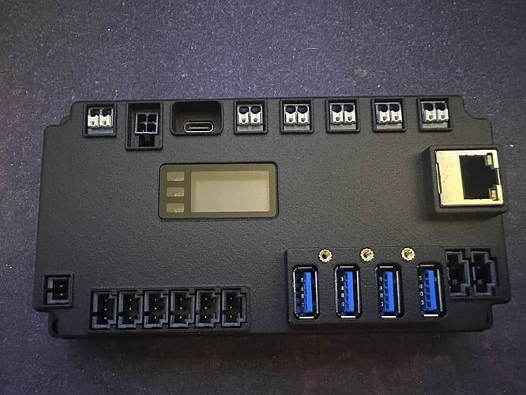

Semana 1 — Chegada do SystemCore
A espera finalmente terminou, o novo SystemCore chegou para as equipes de FRC que estão participando do processos de testes Alfa (Vocês podem ler mais sobre neste blog), e já estamos explorando todos os detalhes técnicos. Está claro que o SystemCore da Limelight não é apenas uma evolução pequena, a gente vai ter grandes mudanças em software e hardware daqui pra frente.

Para quem não conhece: o que é o SystemCore?
O SystemCore é o novo módulo computacional desenvolvido pela Limelight, projetado para ser o “cérebro central” dos robôs da FIRST Tech Challenge e FIRST Robotics Competition. Substituindo os amados roboRIO e Control Hub.
Na prática, ele funciona como uma central unificada que combina:
- Processamento de alto desempenho: baseado em arquitetura ARM moderna, capaz de rodar algoritmos de visão e controle em tempo real no próprio módulo, sem depender de co-processadores externos. Em comparação, o roboRIO, é muito mais limitado em capacidade de processamento geral e praticamente inviável para tarefas pesadas de visão computacional por exemplo.
- Gerenciamento de entradas e saídas (I/O): possibilita controlar sensores, atuadores, LEDs e outros dispositivos diretamente, com latência mínima.
- Conectividade ampla: inclui 5 interfaces CAN FD, Ethernet, Wi-Fi, Bluetooth, USB e PCIe, permitindo integração com praticamente qualquer subsistema do robô.
- Sensores embarcados: como a IMU (unidade de medição inercial), essencial para navegação autônoma e estabilização.
O grande diferencial do SystemCore é a melhora de desempenho e novas tecnologias comparado com o roboRIO e o Control Hub

Arquitetura e processamento
No centro do SystemCore está o Raspberry Pi CM5, equipado com um processador quad-core ARM Cortex-A76 a 2.4 GHz. Acompanha 4 GB de RAM LPDDR4X de alta velocidade e 16 GB de armazenamento interno eMMC. O processamento gráfico fica por conta do VideoCore VII, com suporte a OpenGL ES e Vulkan, permitindo interfaces gráficas ricas e atualizações em tempo real.
Complementando a arquitetura principal, existe um subsistema em tempo real baseado no RP2350 (dual-core Cortex-M33 a 150 MHz). Este microcontrolador gerencia as entradas e saídas críticas, leitura de sensores e monitoramento de falhas, garantindo baixa latência e maior confiabilidade.
Conectividade
O SystemCore foi projetado como um verdadeiro hub para sistemas robóticos avançados:
- 5 interfaces CAN FD, suportando até 8 Mbps, com terminação integrada de 120 Ω. (SIM, 5 BARRAMENTOS DE REDE CAN PARALELOS!!!!!!!!!!!)
- 4 portas USB 3.0, para conexão de câmeras, módulos de expansão ou armazenamento.
- Ethernet Gigabit, Wi-Fi dual-band (2.4 e 5 GHz) e Bluetooth 5.0. Principalmente para ser utilizada pela FTC e para debug da FRC, ela não vai subsitituir o rádio VH-109 da FRC em quadra.
- Porta PCIe M.2, permitindo futuras expansões. Como o já utilizado por equipes de FRC, Halio - 8, que permite o processamento de imagem utilizando IA.
- Porta BRIDGE, que integra alimentação e CAN em um único cabo, pensada para integração com o MotionCore (Exclusivo para uso das equipes de FTC).
Entradas e saídas flexíveis
O módulo possui 6 portas I/O configuráveis em tempo real, suportando:
- Entradas e saídas digitais
- PWM
- Entradas analógicas (12-bit ADC, 0 a 3.3 V)
- LEDs endereçáveis*
- Decodificação de quadratura*
- Aqui temos uma mudança importante para as equipes de FRC, as portas I/O do SystemCore trabalham em 3.3V, não em 5V como no roboRIO
* Algumas funções estão em fase final de validação.
O ADC atinge taxas de amostragem de até 500 kS/s, com alta precisão e linearidade. Todo o sistema de I/O conta com proteção contra sobrecorrente, sobretensão e ESD de até ±30 kV.
IMU integrada
A unidade de medição inercial (IMU) fornece dados a 400 Hz, incluindo quaternions, aceleração (±4 G a ±32 G) e giroscópio (±125°/s a ±4000°/s). Esses recursos oferecem novas possibilidades para estratégias de navegação e estabilização avançada. Eliminando a necessidade de sensores externos como o NavX e Pidgeon 2.0, enquanto diminui o tempo de resposta do sensor.
Gerenciamento de energia e robustez
O SystemCore opera em uma faixa ampla de tensão (5 V a 26 V), com arquitetura buck-boost e consumo máximo de 40 W. Conta com proteção contra polaridade reversa, brownout configurável e relatórios de falhas em display OLED, LEDs de status e via telemetria do robô.
O design físico reforça a durabilidade: base em alumínio, topo em ABS/PC, revestimento conformal na placa principal e conectores projetados para reduzir a entrada de poeira e detritos, atendendo às condições mais exigentes em campo.
- Mais informações técnicas preliminares sobre o systemcore, podem ser encontradas aqui.
- Todas as atualizações sobre o progresso da fase de testes Alfa, assim como mais informações sobre o systemcore, estão no Github do Systemcore.
Recebimento e primeiros passos na 1156
A gente já recebeu o nosso SystemCore e iniciou os testes preliminares. Preparamos uma lista detalhada de verificações para avaliar desempenho térmico, estabilidade do CAN, resposta das I/Os em condições reais e integração com nossos subsistemas de movimento. Nas próximas semanas, publicaremos os primeiros resultados e análises práticas.
Conclusão
O SystemCore marca uma nova fase no controle embarcado para robôs da FIRST. Combinando processamento potente, conectividade abrangente e foco em confiabilidade, abre espaço para soluções mais ambiciosas e maior visibilidade sobre a performance do robô em tempo real.
Seguiremos compartilhando atualizações detalhadas sobre cada etapa dos nossos testes. Acompanhe o blog para acompanhar as descobertas e os avanços no uso deste novo sistema.
Tem algo específico que sua equipe quer saber? Nos chamem no insta, ou comentem aqui!
Deixe sua reação ai também :)